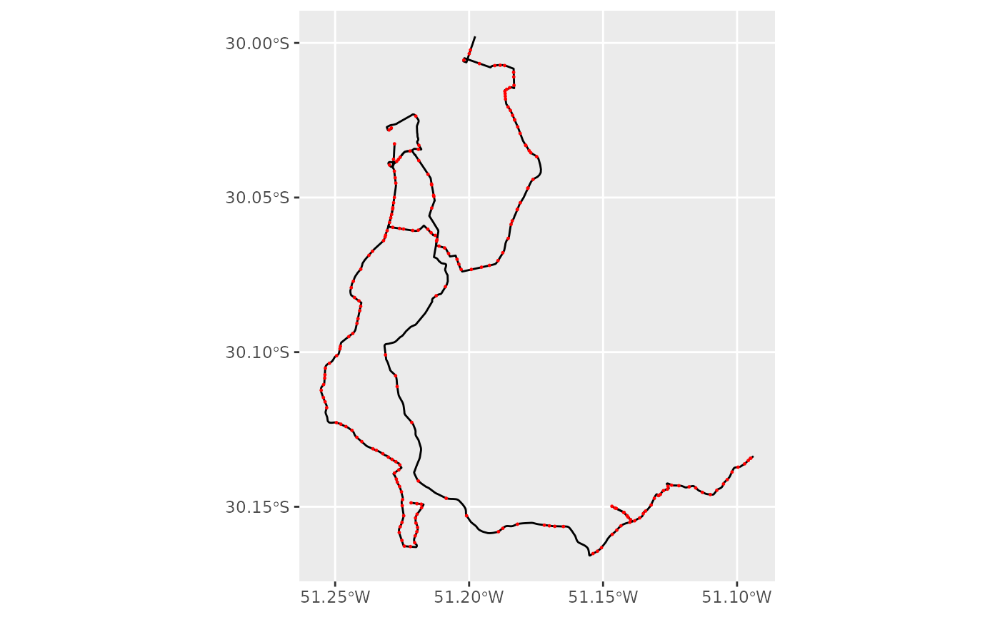
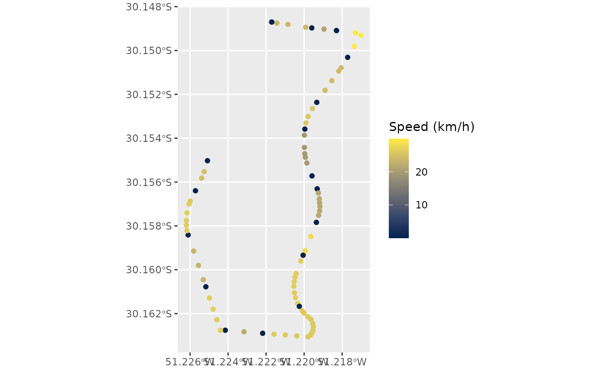
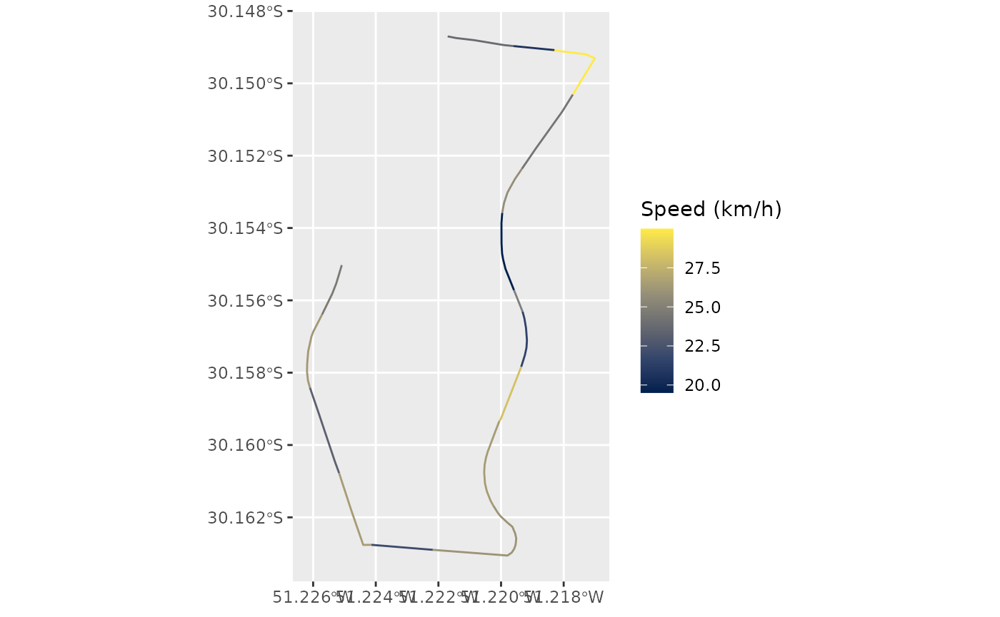

gtfs2gps: Converting GTFS data to GPS-like format
Rafael H. M. Pereira, Pedro R. Andrade, Joao Bazzo
Source:vignettes/intro_to_gtfs2gps.Rmd
intro_to_gtfs2gps.RmdAbstract
Packagegtfs2gps converts public transport GTFS data
to GPS-like records using data.table. It also has
functions to post-process these records, for example converting
them to simple feature format.
Introduction
Package gtfs2gps allows users to convert public
transport GTFS data into a single data.table format with
GPS-like records, tracking the space-time position of individual
vehicles at high spatial and temporal resolutions. This GPS-like data
format is quite convenient as it can be easily used in various
applications for running transport simulations, scenario analyses, data
visualizations etc.
To start using the package, you can install it from CRAN:
install.packages("gtfs2gps")Loading data
After loading the package, you can read a GTFS feed using
read_gtfs(). This function gets a zipped GTFS file and
returns a list of data.table objects (a
dt_gtfs object from {gtfstools}). To demonstrate the
package, we will use a small sample of the GTFS from Porto Alegre,
Brazil.
library("gtfs2gps")
# path to gtfs file
gtfs_file <- system.file("extdata/poa.zip", package = "gtfs2gps")
# read gtfs to memory
poa <- gtfs2gps::read_gtfs(gtfs_file)
names(poa)
#> [1] "agency" "calendar" "routes" "shapes" "stop_times"
#> [6] "stops" "trips"The returning list contains the tables from the GTFS file indexed
according to their file names. read_gtfs() checks that the
tables required by {gtfs2gps} are present and not empty:
routes.txtshapes.txtstop_times.txtstops.txttrips.txt
If the feed has a frequencies.txt file, it is used as
well.
If you’d like to visualize how the transport network looks like, you can use a few convenient functions from {gtfstools}, our sister package.
library(ggplot2)
# get spatial geometries of GTFS
shapes_sf <- gtfstools::get_shapes_geometry(poa)
stops_sf <- gtfstools::get_stops_geometry(poa)
ggplot() +
geom_sf(data = shapes_sf) +
geom_sf(data = stops_sf, color = "red", size = .2)
Sometimes, GTFS feeds come with internal inconsistencies, for example
with trips going too fast, or not accounting for dwell time, etc. We
highly recommend that you use {gtfstools} functions to profile, clean
and edit your GTFS data before running {gtfs2gps} on it. In the example
below, we run gtfstools::fix_gtfs(), a simple and
convenient function to fix a few of these issues. Here, we use this
function to try to cap the max speed between stops at 25 km/h and to set
a min dwell time of 30 secs, and the function recalculates the stop
times of the feed. Note that fix_gtfs() works on the stop
times, so some segments of the output of gtfs2gps() can
still be faster than 25 km/h.
# quick fix
poa_fixed <- gtfstools::fix_gtfs(
gtfs = poa,
max_speed = 25,
min_dwell_time = 30
)Converting to GPS-like format
To convert GTFS to GPS-like format, use gtfs2gps(). This
is the core function of the package. It takes a GTFS zipped file or a
GTFS object as an input and returns a data.table where each
row represents a ‘GPS-like’ data point for every trip in the GTFS file.
In summary, this function interpolates the space-time position of each
vehicle in each trip considering the network distance and average speed
between stops. The function samples the timestamp of each vehicle every
by default, but the user can set a different value in the
spatial_resolution argument. See the example below.
poa_gps <- gtfs2gps(
gtfs_data = poa_fixed,
spatial_resolution = 100
)Tip 1: Parallelization
You can use the argument ncores to set how many threads
the function uses to parallelize operations. The default is 2,
ncores = 1 runs sequentially, and ncores = Inf
uses all the threads available, as given by
data.table::getDTthreads(). Using more threads can reduce
computation time in large GTFS feeds, and the result is the same for any
number of threads.
Tip 2: Coping with RAM memory limits
In some really large GTFS feeds, the output of
gtfs2gps() can sum to dozens of millions of rows. To help
with this, you can pass to the argument filepath the path
to a local directory, and the function will save the output of each
shape to a separate file in this directory (.txt, or
.rds with compress = TRUE) without loading
them to your RAM.
Visualizing gtfs2gps output
The output of gtfs2gps() looks like a traditional GPS
data set: each row is the timestamp and location of a vehicle on a trip
scheduled in the GTFS. The output includes a few columns indicating the
speed, distance travelled and whether a given point is at a transit
stop.
head(poa_gps)
#> shape_id trip_id route_type id timestamp shape_pt_lon shape_pt_lat
#> <char> <char> <int> <int> <ITime> <num> <num>
#> 1: 176-1 176-1@1#602 3 1 06:02:00 -51.22170 -30.14870
#> 2: 176-1 176-1@1#602 3 2 06:02:00 -51.22170 -30.14870
#> 3: 176-1 176-1@1#602 3 3 06:02:04 -51.22143 -30.14875
#> 4: 176-1 176-1@1#602 3 4 06:02:13 -51.22085 -30.14881
#> 5: 176-1 176-1@1#602 3 5 06:02:26 -51.21991 -30.14894
#> 6: 176-1 176-1@1#602 3 6 06:02:31 -51.21960 -30.14897
#> stop_id stop_sequence speed dist cumdist cumtime
#> <char> <int> <units> <units> <units> <units>
#> 1: 59 1 1.0000e-12 [km/h] 0.000 [m] 0.000 [m] 0.000 [s]
#> 2: 59 1 1.0000e-12 [km/h] 0.000 [m] 0.000 [m] 0.000 [s]
#> 3: <NA> NA 2.3792e+01 [km/h] 26.649 [m] 26.649 [m] 4.032 [s]
#> 4: <NA> NA 2.3792e+01 [km/h] 56.249 [m] 82.898 [m] 12.544 [s]
#> 5: <NA> NA 2.3792e+01 [km/h] 91.527 [m] 174.425 [m] 26.393 [s]
#> 6: 5776 2 2.3792e+01 [km/h] 30.448 [m] 204.873 [m] 31.000 [s]
#> trip_number
#> <int>
#> 1: 1
#> 2: 1
#> 3: 1
#> 4: 1
#> 5: 1
#> 6: 1To help with the spatial visualization of the output, you can use two
support functions to convert the GPS-like data into
simple feature points or linestrings. Let’s see an example
with the first 100 data points of the sample data we processed, coloured
by speed.
poa_gps100 <- poa_gps[1:100, ]
# points
points_sf <- gtfs2gps::gps_as_sfpoints(poa_gps100)
ggplot() +
geom_sf(data = points_sf, aes(color = as.numeric(speed))) +
scale_color_viridis_c(option = "cividis") +
labs(color = "Speed (km/h)")
# linestring
linestring_sf <- gtfs2gps::gps_as_sflinestring(poa_gps100)
ggplot() +
geom_sf(data = linestring_sf, aes(color = as.numeric(speed))) +
scale_color_viridis_c(option = "cividis") +
labs(color = "Speed (km/h)")
Note: gps_as_sflinestring() creates one linestring for
each segment between two consecutive stops of a trip, assuming a
constant average speed between them. The spatial_resolution
argument of gtfs2gps() controls how far apart the points
are within each segment, not the length of the segments.
Methodological note
For a given trip, the function gtfs2gps calculates the
average speed between each pair of consecutive stops given by the ratio
between cumulative network distance S and departure time
t for a consecutive pair of valid stop_ids
(i),

Each stop appears as two data points in the output: the first has the
time the vehicle arrives at the stop (arrival_time in
stop_times.txt), and the second the time it departs
(departure_time), with the vehicle stationary between them.
The speed, dist and cumtime
columns are computed from the difference between each row and the
previous row of the same trip, and cumdist and
cumtime start at zero at the first stop with a departure
time (at its arrival, when it has one).
A shape often begins before the first stop of its trips or ends after
the last one (in the poa feed, about half of the trips start before
their first stop). Those points have no time to be interpolated from, so
each trip only runs from its first to its last stop with a departure
time: the points of the shape outside them are not returned. Unrealistic
speeds are best fixed in the GTFS before converting it, with
gtfstools::set_max_speed() (and
gtfstools::set_min_speed(), in the development version of
gtfstools).
Final remarks
If you have any suggestions or want to report an error, please visit the GitHub page of the package here.